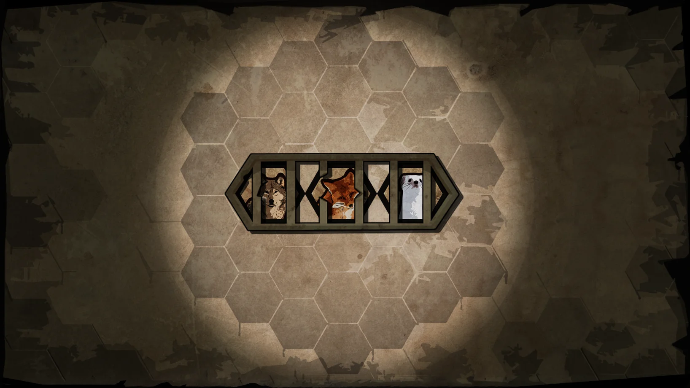
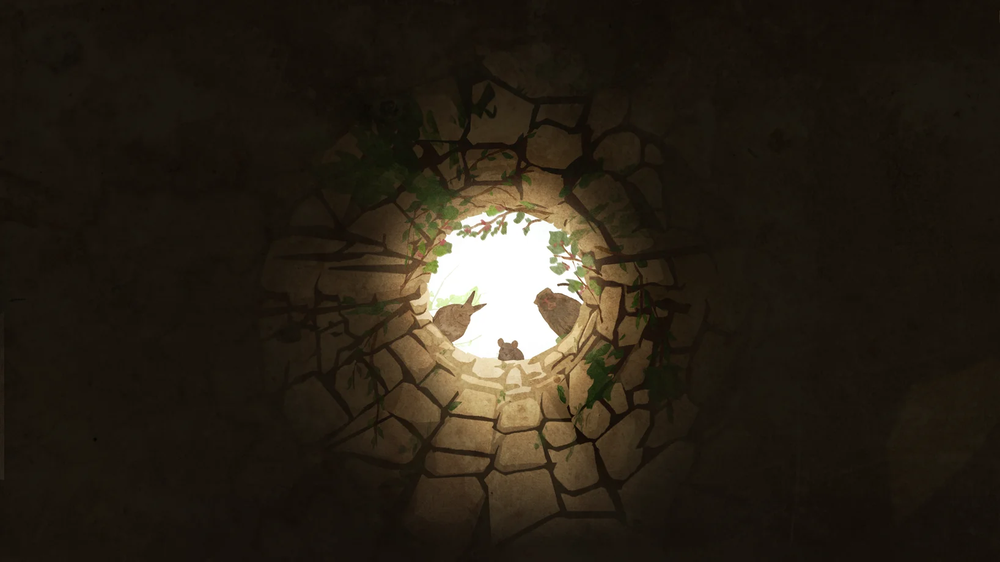
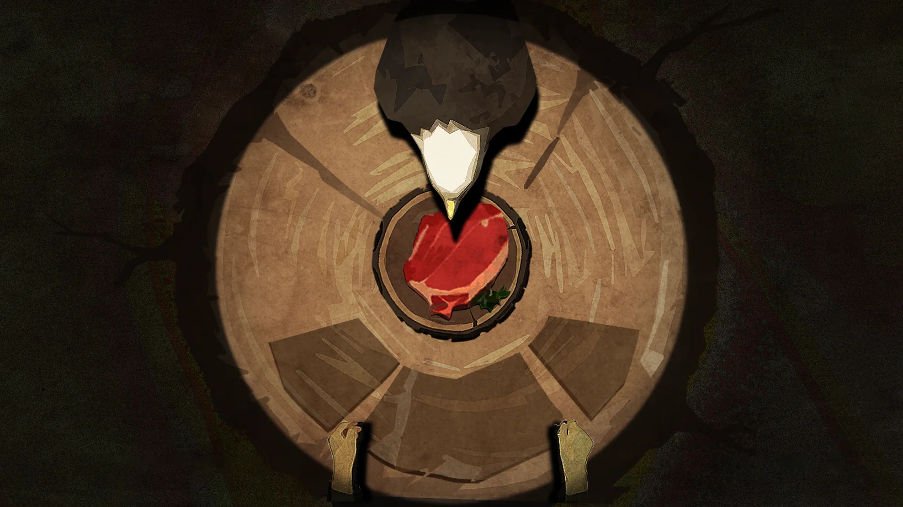
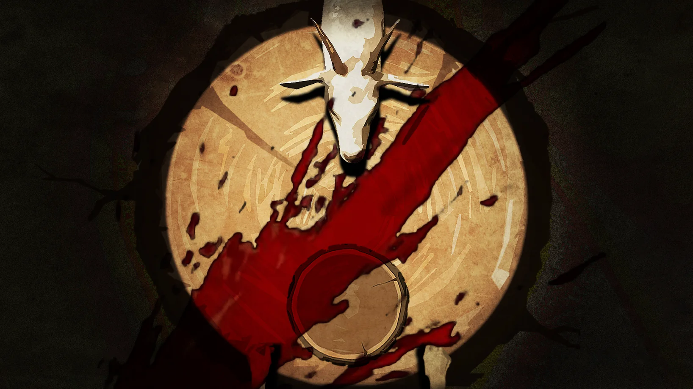

A shop in the forest, a menu made of risk.
A long-term dark survival management game where the player sends animal companions to gather food, serves dangerous guests at night, and balances profit against sanity, violence, and survival pressure.
The Overview
EatWell is a long-term indie project by the team 井上添花. The public Gcores page presents it as a Windows strategy, simulation, and survival game with a dark forest tone, and the project is planned for a future Steam release.
The player runs a small shop after falling into a strange forest. During the day, animal companions are sent out to explore the surrounding terrain, gather food and materials, and potentially evolve or mutate. At night, customers arrive one by one. If the player can serve the food they need, the shop earns currency. If not, the player may be forced into violence, taking food and hearts from guests while losing sanity and risking deeper consequences.
My work focused on numerical design and system planning, especially after the first version of the game had already proven its basic direction. From the second iteration onward, I participated in most of the gameplay planning work: clarifying resource values, round structure, customer pressure, companion growth, merchant rewards, and how the game's dark tradeoffs should escalate over a run.
A Three-Part Daily Loop
The core structure is built around a readable day-night-dawn loop. Each round asks the player to prepare, face the consequence of that preparation, and then adjust through the merchant before the next round begins.
Day: Dispatch
Send companions to terrain tiles, collect food and resources, and decide whether to push evolution or gather materials for survival.
Night: Serve or Kill
Customers arrive in sequence. Feeding them earns currency; failing to satisfy them can lead to attacks or the player's choice to kill for food, hearts, and a sanity cost.
Dawn: Merchant
Spend currency, buy items or companions, sell hearts, and adjust the build before the next day's pressure arrives.
My Design Focus: Numbers as Moral Pressure
The most interesting design problem in EatWell is that its numbers are not only economy values. They also carry the tone of the game. Food demand, customer health, weapon damage, sanity loss, merchant price, companion cap, and spoilage chance all shape the same question: how far will the player go to survive?
In the second and later iterations, my planning work revolved around making that pressure legible. If the food economy is too loose, the night phase loses threat. If killing is too efficient, the moral and survival tension collapses into an obvious optimal strategy. If sanity punishments are too sharp, the player feels punished for exploring the game's darkest system. The balance target was not simple fairness; it was controlled discomfort.
That also affected how I approached tables and configurations. The project uses a lot of data-driven content: companion outputs, customer requirements, food values, recipes, terrain outputs, item effects, weapon upgrades, round queues, and sanity punishments. My role was to help those values support a run structure that could escalate from resource planning into danger, compromise, and consequence.

Systems That Had to Work Together
The page is not only about a theme; it is about how several systems support the theme at once. The player needs to read future demand, prepare food types, evaluate terrain, grow companions, buy items, upgrade weapons, and manage sanity loss. Each layer is simple by itself, but the design challenge is making them form one pressure curve.
Companions, Terrain, Evolution
Companions gather different food and materials. Terrain controls available outputs, evolution pools, and mutation chances, so dispatch decisions are also long-term build decisions.
Customers, Food Demand, Violence
Customer queues turn preparation into a test. Serving creates income; killing creates food and hearts but pushes the sanity system closer to debuffs.
Merchant Items and Run Direction
Merchant items act like roguelike-style modifiers, changing food production, customer ratios, defense, companion purchase, or resource access.
Sanity as Escalation
Sanity thresholds introduce debuffs such as harder customer demands, stronger enemies, more customers, or food spoilage, making violence useful but never clean.
Mood and Player-Facing Readability
The game's presentation is important because it softens and sharpens the same system at once. The paper-cut animal art makes the world approachable, while the well, shadows, and eating/killing imagery keep reminding the player that this is not a cozy restaurant game.



Why This Project Matters in My Portfolio
Compared with short game-jam prototypes, EatWell is important because it shows a different kind of design work: sustained iteration inside a growing commercial project. My contribution was not only ideation, but also the more fragile work of making systems hold together after the initial concept had become playable.
As a numerical designer, I had to think about whether a value was readable, whether a reward distorted the intended choice, whether a punishment taught the right lesson, and whether the whole run still produced pressure without becoming arbitrary. That is the part of design that often disappears in screenshots, but it is also the part that decides whether a management game can stay alive beyond its first pitch.